The short version
If you already know the tools.
-
Duplicate a chatbot
At dash.elfsight.com, duplicate an existing widget, point it at the client's website, publish it, and copy its Share by Link URL.
-
Put them on the map
One row in
FL_Add_Client Template.csv, uploaded to AD_AI2 in ArcGIS Online. The OBJECTID you choose here is the dash ID every later step uses. -
Harvest their properties
Only if the client lists any.
Start_Scraper.bat→ localhost:5000, register the account against that dash ID, run it. -
Build the dashboard record
Start_Organizations.bat→ localhost:5002. Supply five fields, research the other thirty, save, then Put both data files in Dreamweaver. -
Tell the matching engine
Add the organisation to
edo_master_table_dual.json, rebuild the routing indexes, push. Skip this and the client is visible everywhere but never receives a lead.
Steps 2 to 5 are four separate systems that agree on one thing: a number. Decide it at step 2, write it down, and use the same value in every tool afterwards. Nothing validates this for you — each system will happily accept a different number and simply fail to join up.
Elfsight goes live when you press Publish. ArcGIS goes live on upload. The dashboard goes live when you Put the files in Dreamweaver. The engine goes live when Railway redeploys. Four separate acts of publishing, and a client half-added is the normal failure.
Before you start
Five minutes of gathering saves restarting at step 3.
| You need | For |
|---|---|
| The client's website URL | Seeds the chatbot's knowledge base (step 1) and becomes the Embed value (steps 2 and 4) |
| Their property-search URL, if they have one | Step 3. If they have no property database, skip that step entirely. |
| Elfsight sign-in | Step 1. Check the widget allowance on the way in — the header shows it, e.g. 392 / 400. |
ArcGIS Online sign-in — user FastFacility1 | Step 2 |
| Anthropic API credit | Step 4 researches thirty fields for about $0.22. Click Test API keys before you begin, not during. |
| Dreamweaver | Publishing the dashboard files in step 4 |
Deliberately. This runbook is version-controlled and sits in a web-served folder, so a password written here is a password published. Keep it in your password manager alongside the Elfsight and Anthropic credentials.
Step 1 · The AI assistant
Elfsight. The output of this step is a single URL, and everything else in it exists to produce that URL.
-
Duplicate an existing chatbot
Sign in to dash.elfsight.com/apps/ai-chatbot, pick a widget you are happy with, and choose Duplicate from its … menu.
Duplicate rather than Create Widget: the copy inherits the placement, theme, visibility and email settings already tuned for FastLocations, so the only thing left to change is the knowledge base.
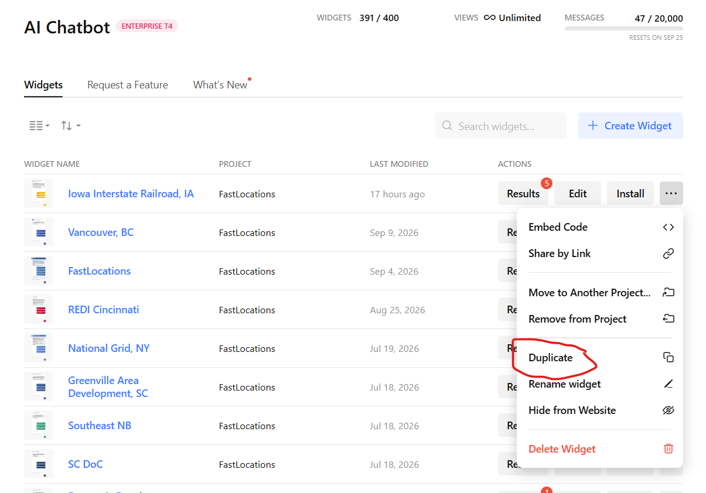
The … menu on any existing widget → Duplicate. -
Open the copy
It appears at the top of the list as <name> Copy, with its project showing as
—. Click Edit.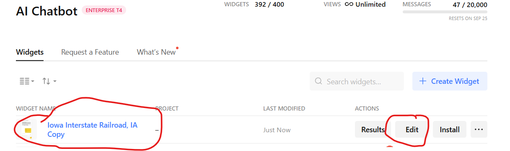
The duplicate arrives unassigned — note the project column reads “—”. -
Point it at the client's site
Paste the client's URL and let Elfsight scan. It reads the site, builds a knowledge base from the content it finds, and shapes a name, icon, role and tone of voice from it.
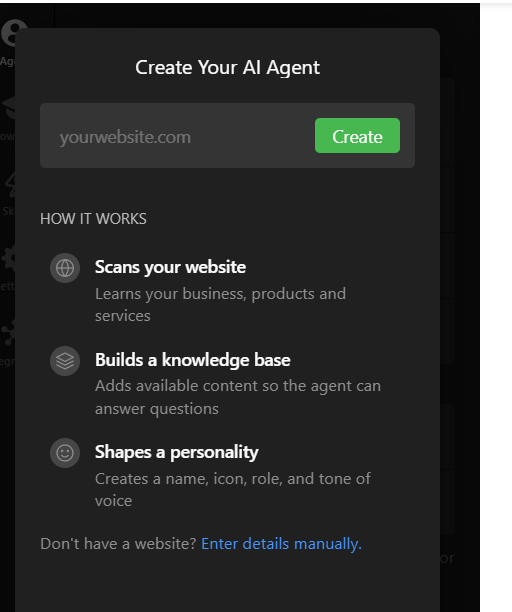
One URL does the work: scan the site, build the knowledge base, shape the personality. -
Check the settings, rename, assign, publish
Work through Placement & Layout, Theme, Visibility and Email Notifications, then rename the widget from “… Copy” to the client's name and press Publish.
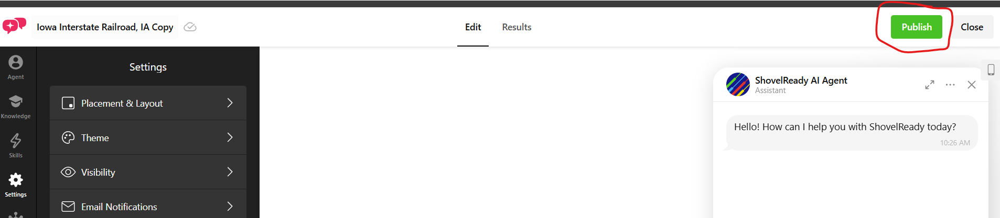
Publish is the only thing that makes the widget answer. Assign it to the FastLocations projectA duplicate is created outside any project. Leave it that way and the widget works perfectly but drops out of the FastLocations list, which is how you find it again in a year. Use Assign to Project… in the same … menu.
-
Copy the share link
From the widget's … menu choose Share by Link, then Copy Link. Not Embed Code — the map and the dashboard both want a plain URL.
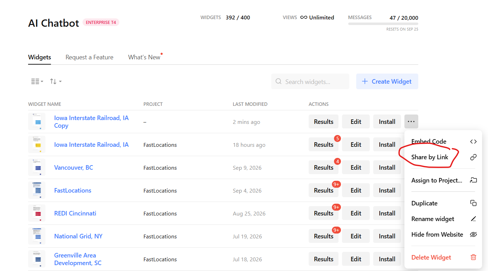
Share by Link, not Embed Code. 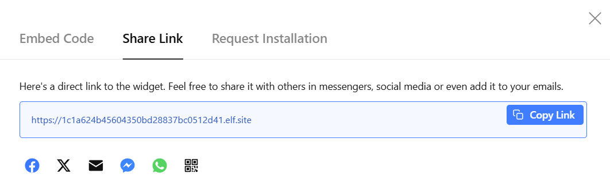
.elf.site with a Copy Link button">The result is a bare elf.siteURL. This is the AI Link.It takes the form
https://1c1a624b45604350bd28837bc0512d41.elf.site. Keep it on the clipboard — you need it twice, in step 2 and again in step 4.
Step 2 · The map record
ArcGIS Online, the AD_AI2 hosted feature layer. This is where the OBJECTID is decided.
Fill in the template row
Open FL_Add_Client Template.csv in the FastLocations folder and replace the template values with the client's. Three fields carry more weight than the rest:
| Field | Value |
|---|---|
| OBJECTID | A new number, larger than the last entry. This becomes the dash ID used by every other system. |
| AI Link | The elf.site URL from step 1. |
| Embed | The client's current website URL. |
You can stage several clients in one CSV and add them together; the steps below are identical.
Upload it
-
Find the layer
Sign in at arcgis.com, then Content → My favorites → AD_AI2. It is the hosted feature layer, not either of the web maps beside it.
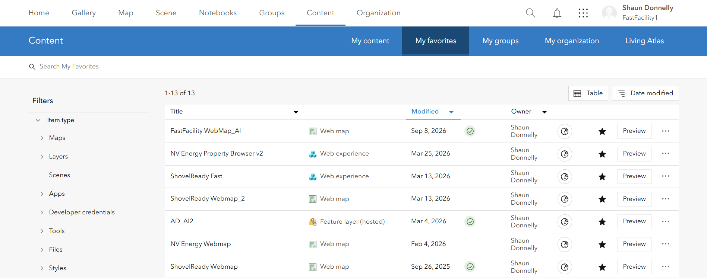
Content → My favorites. AD_AI2 is the Feature layer (hosted) row. -
Open the Data tab
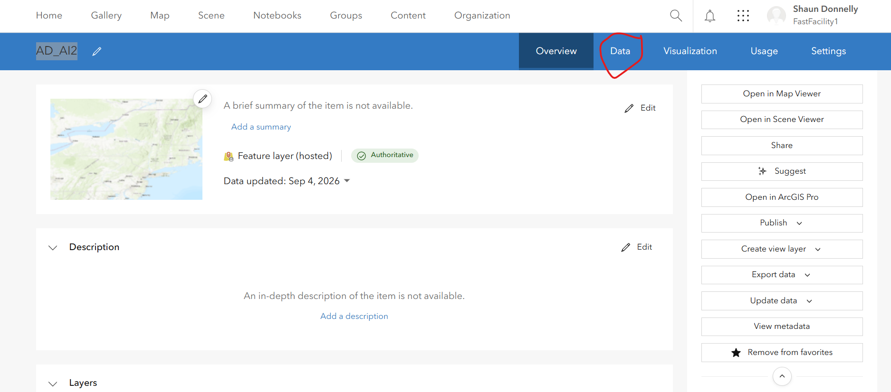
The item page. Data, not Visualization. -
Update data → Update from a file
In the left column of the table view. The layer underneath is
EDs_ai_XYTableToPoint12a.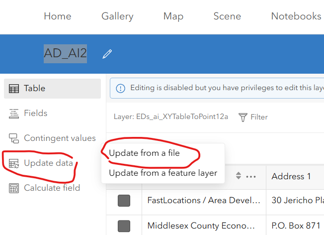
Update data → Update from a file. -
Choose Add features
ArcGIS says it plainly: this feature service only supports adding new features. The other three options are greyed out, which is the safeguard working.
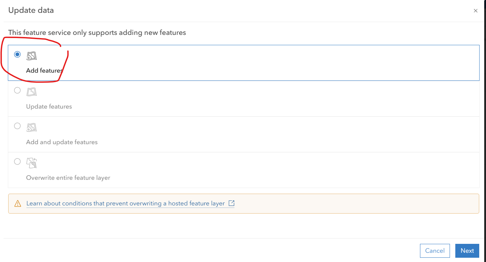
Add features is the only live option. -
Drop in the CSV
Drag the file in or pick it from your computer, then Next through the rest. The new row or rows are appended.
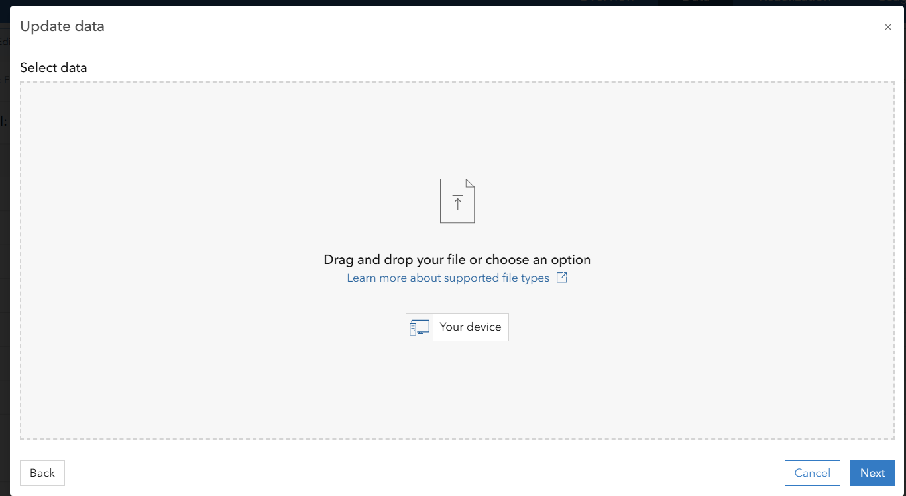
Drag and drop, or choose from your device.
Row order in this layer is load-bearing. Add to the end, and only to the end — which is why the OBJECTID must exceed the previous entry and why the service refuses to overwrite. Sorting the CSV before upload, or overwriting the layer to “tidy it up”, breaks the pins.
Step 3 · The properties
Only if the client lists sites or buildings. The full detail is in the Property Scraper Runbook; this is what adding one account involves.
Double-click Start_Scraper.bat in the FastLocations folder. A black window opens and the browser lands on localhost:5000. Leave the window open while you work, and close it when you are done — that is what shuts the tool off.
Register the account
Four boxes at the top of the page:
| Box | What to enter |
|---|---|
| Property search URL | The client's property or site-search page — or the map/tool URL itself. |
| dashId | The OBJECTID from step 2. This is what ties the harvested file to the right dashboard. |
| Label | A readable name, e.g. Hancock EDC. |
| State / Province | From the dropdown. Required. |
Detect + Add + Run identifies the platform, registers the account and runs it immediately — the right choice for the browserless platforms. Detect only reports what it found without committing, which is worth a click first on an unfamiliar site.
Every run writes the dated JSON file and rebuilds properties_all.json, the single merged file the website loads. There is no separate publish step for property data.
Some accounts register but cannot run until a value has been captured from the live site — VEDP regional sites need a property-list capture, ArcGIS Experience and Geocortex apps need their Feature Service URL. The tool says so plainly. Send the URL to Claude; it is typically a one-minute fix, after which the account runs itself on every future refresh.
What runs without a browser
Platforms marked api are browserless and fast; browser opens a Playwright window that pages through listings and closes itself.
| Platform | Mode | Notes |
|---|---|---|
| ZoomProspector | browser | Also branded domains and broker/region filters |
| Buildings & Sites | browser | Main site and branded *siteselection.com domains |
| GISWebTechGuru | api | Resolves the Tenant ID automatically |
| LocationOne | api | Common in Canada too |
| Resimplifi | api | Needs a county/city filter, set by Claude |
| Catylist / Moody's | api | Can be scoped to one county |
| SiteLinkWeb | api | Catylist data behind a Blazor front-end |
| VEDP (Virginia) | api / Claude | Statewide runs itself; regional sites need a capture |
| EDSuite (Statamic) | api | Public content API |
| Tevolution (WordPress) | api | Category-page directory sites |
| ArcGIS Feature Service / Experience / Geocortex | api / Claude | Experience Builder apps need the service URL captured |
| ArcGIS StoryMap | api | Pins on an embedded express map |
| Atlantic4 | api | Atlantic Canada certified sites |
Custom WordPress (grow_wp) | api | e.g. Grow Laurens County |
Paste a statewide ZoomProspector URL and the tool warns you, because it will pull the entire state. The local EDO's filter is usually applied by JavaScript, so the tool cannot see it. If the client really is statewide, click Run. If you want only their patch, send the URL to Claude to capture the right broker ID or region.
LoopNet (CoStar LoopLink) and realtor.ca (CREA/MLS) are refused with a clear message: aggressive anti-bot measures, and scraping against their terms. MapMe is impractical to automate reliably. If the client's property search is one of these, they get no property dataset — note it and move on to step 4.
If the client's data is a hand-built JSON file rather than a scrape, drop it in properties\JSON\ and ask Claude to add its datasets.json entries. Manual files sit outside the account list, so Run All never touches them.
Step 4 · The dashboard record
The Organizations editor. You supply five fields; it researches the other thirty. Full detail in the Organizations Data Runbook.
Double-click Start_Organizations.bat → localhost:5002. Click Test API keys before anything else: if Claude shows a cross, top up at console.anthropic.com rather than discovering it mid-record.
The five fields that are yours
Click + New record. Two of these cannot be discovered by any amount of searching, and three of them steer every search that follows:
| Field | Value |
|---|---|
| OBJECTID | The number from step 2. The tool pre-fills the next free id — type over it. See section 8. |
| AI Link | The elf.site URL from step 1. |
| Organization | The seed everything else is found from. The one field that cannot be blank. |
| Category | Decides which geography the figures describe — see below. Not cosmetic. |
| City | Plus State, and Address 1 / Address 2 if you have them. |
Those five start unticked; everything else starts ticked. So Research ticked fields is one click that fills the remaining thirty, in three Claude calls, for roughly $0.22.
It is ticked for research by default, but choosing it narrows every subsequent search and rules out a whole class of error — the Arizona Commerce Authority sat in the data as AR for a long time. Dozens of places have a “Chamber of Commerce”; City and State are the difference between the right one and a plausible wrong one.
Category decides what “the area” means
This is the quietest way to produce a record that looks right and is useless. The Category picks one of three geographies, and it changes the searches, the instructions and the field rules together:
| Scope | Applies to | The figures describe |
|---|---|---|
| statewide | State Agency | The whole state — not the town the office sits in |
| territory | A Utility that is the only one of its name in its state | Its service territory |
| local | Everything else | The city and its county |
Get this wrong on a new state agency and you get its host city's population presented as the state's. Ten of the 31 statewide records trip the warning for exactly that reason today.
Read it, then save
Researched values land in the form, not on disk. The badge at the top must read valid: error blocks the save because the dashboard would drop or mis-render the value, while warning only means it looks unlike the rest of the dataset.
The dashboard parses these fields with regular expressions to build its charts, so a value in the wrong shape produces an empty chart and no error anywhere. That silent failure is what the validation exists to catch. Read the red message under a field — it names the exact pattern — or copy the wording from a good record in the same state.
Save backs up the whole file to dash\data\_backups\<timestamp>\ first, then rewrites it. To undo anything at all, copy that backup over dash\data\organizations.json and restart the tool.
Publish it
Saving updates your PC. The website serves the old data until you upload, in Dreamweaver, both of:
| File | Why |
|---|---|
| dash/data/organizations.json | The records themselves |
| dash/data/meta.json | Record count and state list, refreshed on every save. The filters read it. |
Upload only the records and the filter dropdowns fall out of step with them — the new client is in the file but unreachable from the interface.
orgs_config.json holds both API keys in plain text. It stays on your PC.
Step 5 · The matching engine
The step that has no button, no warning and no tool — and the one that decides whether the client ever receives a lead.
The dashboard and the scoring engine hold the same roster of organisations in two different files, keyed by the same id:
| File | Lives on | Read by | Updated by steps 1–4? |
|---|---|---|---|
| dash/data/organizations.json | The web host | The dashboard | yes — step 4 |
| edo_master_table_dual.json | Railway, in the API | scorer.py | no |
Nothing synchronises them. A client added through steps 1 to 4 has a chatbot, a pin, properties and a dashboard — and is invisible to Where to Expand: My Project. The matching engine rolls every candidate county up to the EDO customer whose territory covers it, and an organisation absent from the master table serves no territory, so it is never anybody's answer.
Add the row
Each record carries the same identity fields you have already filled in, plus a territory:
{
"objectid": "4571",
"organization": "Hancock County EDC",
"category": "Local Development Agency",
"city": "Findlay",
"state": "OH",
"country": "US",
"latitude": "41.044", "longitude": "-83.650",
"home_county_fips": "39063",
"territory_fips": ["39063"],
"territory_geoids": ["39063"],
"geo_system": "US_FIPS", "geoid_type": "county_fips",
"territory_basis": "home_county",
"embed_url": "https://...", "ai_link": "https://....elf.site"
}objectid is a string, and it is the same number as everywhere else. ai_link and embed_url are the two URLs from steps 1 and 2 again.
How the territory is set depends on what the client is:
| Kind | Territory |
|---|---|
| A local agency | Its home county. territory_basis: "home_county" — type it in. |
| An electric utility | Resolved from EIA-861 by build_utility_territories.py, which writes territory_geoids into the master table. |
| A regional agency | From regional_edo_members.json via build_regional_territories.py. Add the members there first; without them it keeps a single home county and stays flagged INCOMPLETE. |
Rebuild the routing indexes and ship it
python build_edo_indexes.py # master table -> edo_fips_index.json + edo_ca_cd_index.json
git add -A && git commit && git pushThe two indexes map county FIPS (and Canadian CDUID) to the objectids that serve them. The scorer reads the indexes, not the master table, so a new organisation that is not in them routes to nobody. Railway redeploys from main; confirm the deploy carried it:
https://fastlocations-scoring-api-production.up.railway.app/health
{"counties":3144,"edos":391,"states_with_incentives":65,"status":"ok"}edos should have gone up by one. If it still reads the old number, the deploy has not run or ran from the wrong branch.
Counties served by an organisation with listed properties get a scoring bonus. If PROPERTIES_JS_URL is set, the scorer re-reads the dashboard's properties.js every fifteen minutes and resolves the labels itself — so step 3 propagates on its own, with no rebuild and no push. Only if that variable is unset does it fall back to the bundled snapshot, which is when you rerun build_property_orgs.py (or the orgs_with_properties dataset in the Data Refresh Tool) and push.
python check_regional_balance.py reports how evenly the Top 5 spreads across regions and where customer coverage is thin. Worth running after a batch of new clients — it is how you find out that a whole region still has nobody to route to.
One number, five places
The single most common way a client ends up half-added.
| Where | Called | Watch for |
|---|---|---|
| FL_Add_Client Template.csv | OBJECTID | Must be larger than the previous entry |
| AD_AI2 feature layer | OBJECTID | Appended only, never reordered |
| Scraper account — port 5000 | dashId | Duplicates are blocked; one org's list can feed several dashboards |
| dash/data/organizations.json | OBJECTID | The tool pre-fills a different number — type over it |
| edo_master_table_dual.json | objectid | A string, e.g. "4571" |
The Organizations editor pre-fills the next free OBJECTID, and its own runbook tells you to accept it — correct advice when you are creating a record from scratch, wrong here. You already chose the number in step 2 and three other systems are using it. Type over the suggestion. If the editor refuses it as a duplicate, that number is genuinely taken and it is step 2 that needs revisiting, not step 4.
Two URLs travel just as far. The elf.site link from step 1 is the AI Link in the CSV, the AI Link in the dashboard record, and ai_link in the master table. The client's own website is Embed in the CSV and embed_url in the master table.
Checking it worked
Five systems, five separate proofs. None of them tells you about the others.
| Step | Proof |
|---|---|
| 1 Chatbot | The elf.site URL opens and the assistant answers a question about the client's business. The widget shows the FastLocations project, not —. |
| 2 Map | The new row is the last one in AD_AI2's table, with the OBJECTID you chose. |
| 3 Properties | The run logs a record count above zero, and properties_all.json has been rewritten. |
| 4 Dashboard | The badge read valid before saving; both files uploaded; the client appears in the live filter dropdowns. |
| 5 Engine | /health reports edos one higher than before. |
Run a search on Where to Expand: My Project that the new client's county should win, and see whether the lead routes to them. That exercises the master table, the routing indexes and the territory in one go — the three things nothing else checks.
When it goes wrong
The failures specific to adding a client. The two tool runbooks cover the rest.
| What you see | What it means | What to do |
|---|---|---|
| The chatbot answers about the wrong company | The duplicate's knowledge base was never re-scanned | Edit the widget, paste the client's URL, let it rebuild, publish again |
| The widget vanished from the FastLocations list | The duplicate was never assigned to a project | Assign to Project… in the … menu |
| ArcGIS offers only Add features | Working as intended — the service does not support overwriting | Nothing. Never try to route around it. |
| “Detection failed: platform not recognised” | A new or JavaScript-injected platform | Send the URL to Claude |
| “Registered but not run — fill in params first” | Needs a captured value (VEDP region, ArcGIS service URL) | Send the URL to Claude |
| A property run finishes with 0 records | The site changed, or a session id rotated | Send it to Claude to refresh |
| “OBJECTID is already used by…” | The number you chose in step 2 was not free | Fix step 2 first, then match it here — do not accept the suggested id |
| A dashboard field will not clear its error | The value does not match the shape the charts parse | Read the red message; copy the wording from a good record in the same state |
| The client is on the dashboard but never wins a search | Step 5 was skipped, or the territory is empty | Check /health, then that the objectid appears in edo_fips_index.json |
| Charts on the client's dashboard are blank | A researched value parsed cleanly but in the wrong shape, or meta.json was not uploaded | Re-open the record and read the badge; upload both files |
Property Scraper Runbook for platforms, filters and regional splits. Organizations Data Runbook for bulk research, validation formats and backups. Data Refresh Runbook for the datasets behind the score.